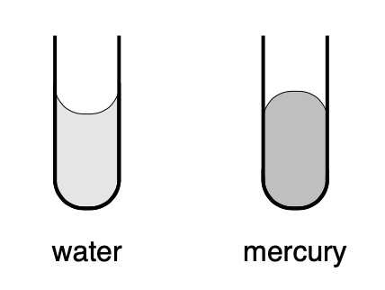

Homework 1¶
Q1¶
Please explain what is happening on an atomic or molecular scale that causes the phenomenon of surface tension. In particular, why is the meniscus for water in a vertical capillary tube concave and that for mercury convex?

Q2¶
Assume a reservoir has homogeneous density denoted by \(\rho\) and homogeneous porosity denoted by \(\phi\). Initially, the pore spaces of the rocks in the reservoir is entirely filled with water. We now inject supercritical CO\(_2\) into the reservoir to replace water, and denote the saturation of CO\(_2\) as \(S\) (\(0\leq S\leq 1\)). Please be careful that \(\rho\) is the density of rock filled with water, not the density of rock itself.
-
Suppose \(\phi=0.3\), \(\rho=3000\) kg/m\(^3\) before injection. Please plot how \(\rho\) changes with different values of CO\(_2\) saturations. What is the shape of the curve?
-
Now change \(\rho=2000\) kg/m\(^3\). Do the same experiment. What is the shape? Can you compare this curve to the previous one?
-
Now we stick to \(\phi=0.3\), \(\rho=3000\) kg/m\(^3\), but inject another fluid as you like -- gas, milk, belgium beer, liquid mercury, coca cola, etc. Do the same experiment. Compare this curve to the curve you got from the first one.
Q3¶
Drawing inspiration from
A. Donev et al., Improving the Density of Jammed Disordered Packings Using Ellipsoids, Science, 303, 990--993 (2004)
D.A. Weitz, acking in the Spheres, Science, 303, 968--969 (2004);
measure the porosity of a random close packing of M&M's. Verify your result by bringing your particular collection of M&M's to class. You can work with other kinds of cookie packs as you like. (In addition, a brief report on your experiment, including a short discussion of how your result agrees or disagrees with what is presented in the above articles, is required.)